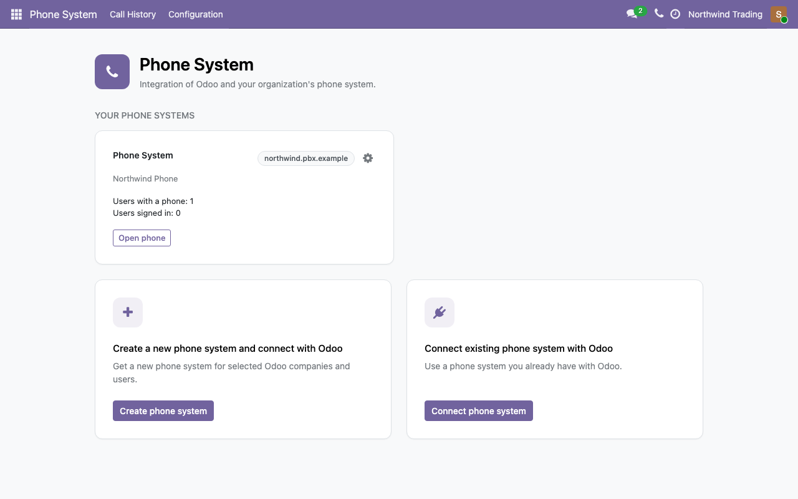
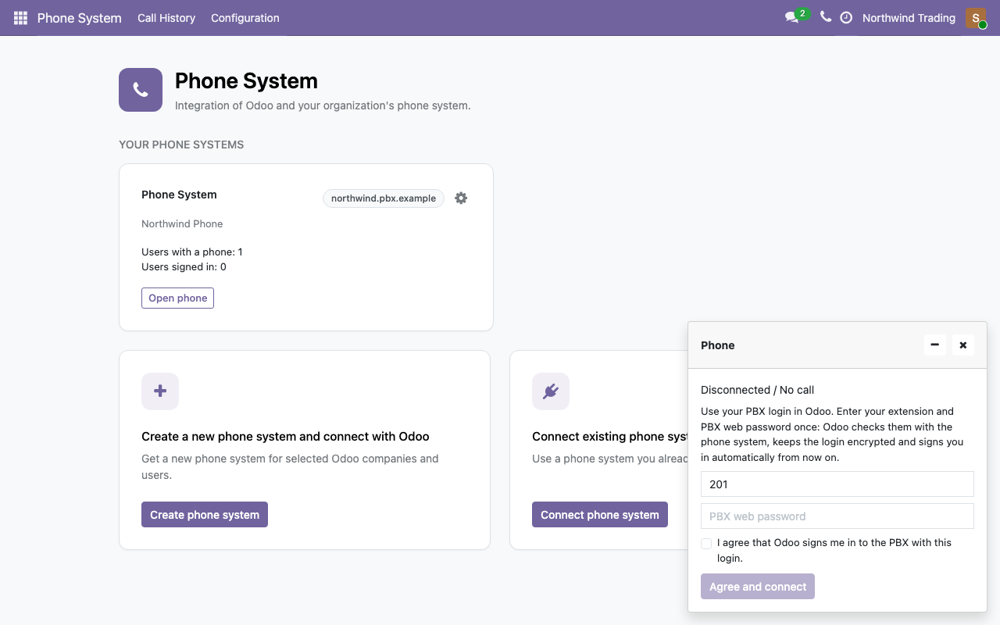
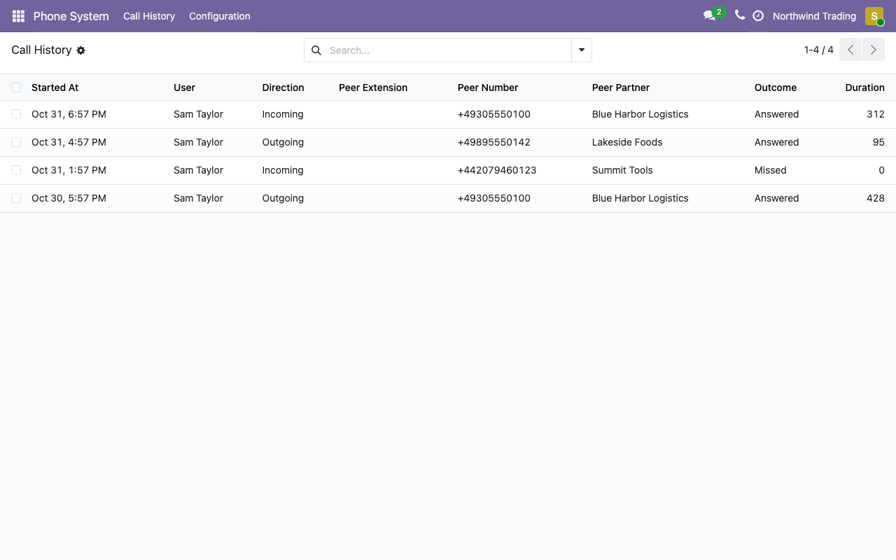

Call history shows who called, when and for how long, matched to your Odoo contacts. Users see their own calls and only the contacts they are allowed to see.

Choose a plan by number of users, monthly or yearly, and pay securely with Stripe. Your phone system is usually ready in under a minute.
Already running a PBX? Connect it and give your Odoo users their extensions.
The app is free to install. A new phone system needs a paid subscription; plans and prices appear in the app before you pay.
Guides and contact details: gcn-alliance.com/support.